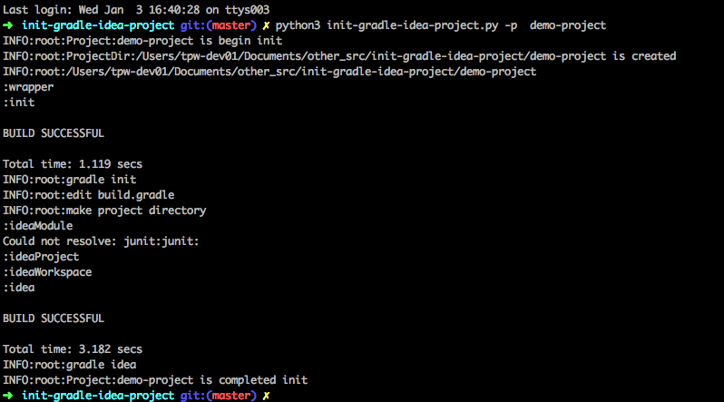
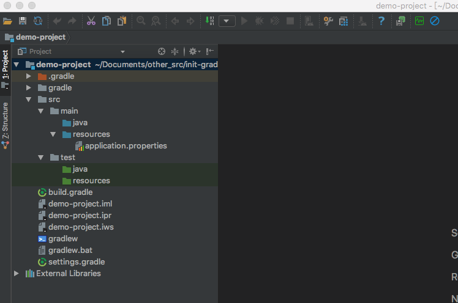

在平时的开发过程中,我们用gradle构建spring boot项目,但是创建项目总会做一些重复琐碎的步骤,基于利用机器提高效率的原则,不如用Python来替我们完成这项工作。
tips:本文程序基于Python3.6和gradle4.0完成,Python3.6和gradle4.0的安装请自行完成不再赘述.
实现思路
创建项目文件夹
- 根据输入项目名称创建文件夹,如果文件夹存在直接停止操作
执行gradle init 初始化gradle 项目的项目文件
- gradle init 命令主要初始化项目文件 build.gradle 等
编辑build.gradle 设置插件、仓库地址,并增加常用依赖配置。
- build.gradle 增加使用了插件 java、gradle、idea
- repositories 节点设置仓库地址.
- 依赖配置 dependencies 节点中配置项目中需要用到的外部引用.
创建项目的基本目录结构并创建默认配置文件application.properties
- 创建目录
- src/main/java
- src/main/resources
- src/test/java
- src/test/resources
- 在src/main/resources下创建application.properties
执行gradle idea 构建项目,并用idea打开项目
- gradle idea 命令生成idea的项目文件,如*.ipr文件等
- MAC 终端中执行open *.ipr 可以直接idea并打开项目
源码分享
使用方法
1 | python3 init-gradle-idea-project.py -p demo-project |
demo-project 项目的名称 projectname
创建项目：

项目目录结构：
